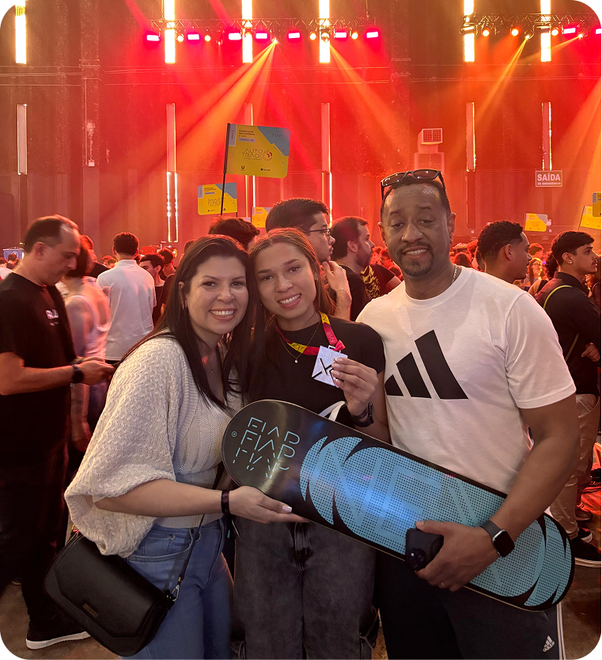

Open To Work
Full Stack Developer
OLÁ, EU SOU Maria Eduarda
Desenvolvedora Full Stack formada pela FIAP, apaixonada por criar aplicações web modernas, escaláveis e centradas no usuário. Experiência com React, Next.js, Node.js, TypeScript e Oracle Database.